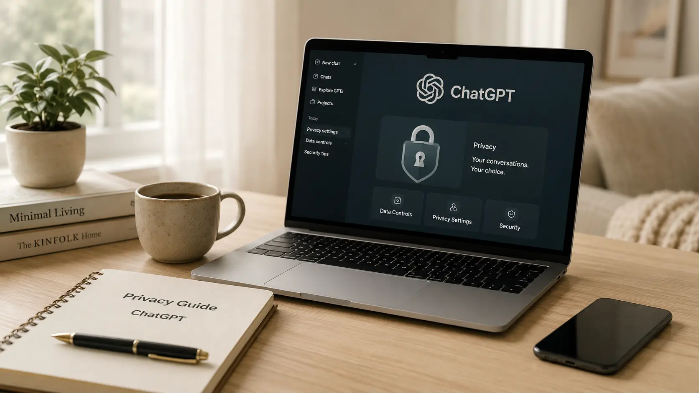

ChatGPT를 쓰다 보면 가장 먼저 드는 걱정이 있습니다. “내가 입력한 대화가 학습에 쓰일까?”, “개인정보를 넣어도 괜찮을까?” 이 글에서는 일반 사용자가 꼭 알아야 할 기준만 쉽게 정리합니다.
ChatGPT는 글쓰기, 요약, 번역, 코드 작성, 아이디어 정리에 매우 유용합니다. 하지만 편하다고 해서 모든 정보를 그대로 넣어도 되는 것은 아닙니다. 특히 개인을 식별할 수 있는 정보나 회사 내부 자료는 한 번 입력되면 관리 범위를 벗어날 수 있기 때문에 주의해야 합니다.
핵심은 간단합니다. 공개되어도 문제가 없는 정보는 사용 가능, 공개되면 곤란한 정보는 넣지 않기입니다. 이 기준만 지켜도 대부분의 위험을 크게 줄일 수 있습니다.
아래 정보는 가능한 한 입력하지 않는 것이 좋습니다.
| 정보 종류 | 예시 | 권장 사용 방식 |
|---|---|---|
| 개인 식별 정보 | 이름, 전화번호, 주소, 주민등록번호 | 가명 또는 일부 마스킹 처리 |
| 금융 정보 | 계좌번호, 카드번호, 인증번호 | 입력하지 않기 |
| 계정 정보 | 비밀번호, API 키, 로그인 토큰 | 절대 입력하지 않기 |
| 회사 내부 자료 | 계약서, 견적서, 고객 리스트, 미공개 전략 | 민감한 부분 제거 후 요약본만 사용 |
| 법률·의료 자료 | 진단서, 소송자료, 민감한 상담 내용 | 식별정보 제거 후 일반화해서 질문 |
많은 사람이 “ChatGPT가 내 대화를 학습한다”는 말을 듣고, 내 대화가 그대로 다른 사람에게 보이는 것처럼 생각합니다. 하지만 일반적으로는 대화가 그대로 복사되어 누군가에게 보여진다는 뜻이라기보다, 서비스 품질 개선이나 모델 개선에 활용될 수 있다는 의미로 이해하는 것이 더 가깝습니다.
다만 사용자 입장에서 중요한 것은 기술적인 세부 구조보다 내가 입력한 정보가 내 통제를 벗어날 수 있다는 가능성입니다. 따라서 민감정보는 처음부터 넣지 않는 습관이 가장 안전합니다.
예를 들어 실제 이름과 전화번호를 넣는 대신 “A씨”, “010-XXXX-XXXX”, “서울의 한 아파트”처럼 바꿔도 대부분의 답변 품질은 크게 떨어지지 않습니다.
계약서나 견적서 같은 문서는 전체를 그대로 넣기보다, 민감한 정보와 금액, 상대방 정보를 제거한 뒤 핵심 조항만 입력하는 것이 좋습니다.
이 정보들은 한 번 노출되면 직접적인 피해로 이어질 수 있습니다. 코드 검토를 받을 때도 API 키나 토큰은 반드시 삭제하고 올려야 합니다.
회사 자료를 AI에 입력해도 되는지는 개인 판단으로 결정하면 위험합니다. 사내 보안 정책, 고객사 계약 조건, 비밀유지 조항을 먼저 확인하는 것이 안전합니다.
ChatGPT는 “생각을 정리하는 도구”로 쓰면 매우 좋습니다. 하지만 “민감한 원본 자료를 그대로 맡기는 보관함”처럼 쓰는 것은 추천하지 않습니다.
| 피해야 할 방식 | 더 안전한 방식 |
|---|---|
| “홍길동, 010-1234-5678 고객에게 보낼 문자를 써줘.” | “고객 A에게 보낼 안내 문자를 써줘.” |
| “이 계약서 전문을 검토해줘.” | “아래 조항에서 불리할 수 있는 표현을 알려줘. 회사명과 금액은 제거했어.” |
| “내 API 키가 sk-...인데 오류가 나.” | “API 키 부분은 [API_KEY]로 가렸어. 이 코드 구조를 봐줘.” |
개인용 서비스, 유료 구독, 팀/기업용 서비스는 데이터 처리 방식과 관리 옵션이 다를 수 있습니다. 특히 기업용 환경에서는 관리자 설정, 데이터 사용 제한, 보안 기능 등이 별도로 제공될 수 있습니다.
따라서 중요한 업무에 사용한다면 단순히 “ChatGPT니까 괜찮겠지”라고 생각하기보다, 사용 중인 서비스의 데이터 설정과 약관을 확인하는 것이 좋습니다.
일반적으로 내 대화가 그대로 다른 사람에게 공개되는 구조라고 보기는 어렵습니다. 하지만 민감정보는 서비스 처리 과정과 보관 정책의 영향을 받을 수 있으므로 입력하지 않는 것이 안전합니다.
대화 삭제는 노출 위험을 줄이는 데 도움이 되지만, 가장 안전한 방법은 애초에 민감정보를 입력하지 않는 것입니다.
공개 가능한 문서라면 괜찮지만, 고객정보·견적·계약조건·미공개 전략이 들어 있다면 반드시 익명화하거나 내부 정책을 확인해야 합니다.
개인정보는 가리고, 원문보다 요약본을 넣고, 비밀번호나 인증정보는 절대 입력하지 않는 것입니다.